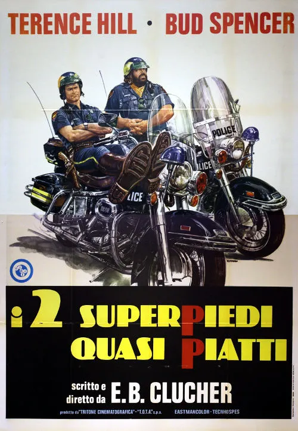

1977 · 3 tracce
Musiche di Guido e Maurizio De Angelis.
Colonna sonora integrale non reperita: sono elencati i brani identificati nelle fonti e le pubblicazioni associate. Restano possibili inserti, riprese strumentali e musiche non pubblicate.
Gli elenchi documentano le edizioni pubblicate; la presenza di ciascuna traccia nel montaggio del film non è certificata.
Brani e ascolti
- 01
I due superpiedi quasi piatti / Zwei außer Rand und Band
Guido De Angelis - Topic · Tema principale; album integrale non reperito. · Identificato nei risultati pubblici; apertura non verificata per un limite temporaneo di YouTube.
- 02
Angels and Beans
Riutilizzato nella scena al chiosco. Ascolto da raccolta: la versione può differire.
- 03
Why Is Everyone So Mad
Riutilizzato nella scena al chiosco. L’ascolto collegato è una nuova registrazione (re-recording), non il master del film.
Fonti e riferimenti
- Scheda del film e creditiConsultata il 3 ottobre 2026.
- Scheda brano: Angels and BeansConsultata il 3 ottobre 2026.
- Scheda brano: Why Is Everyone So MadConsultata il 3 ottobre 2026.
- Locandina — I due superpiedi quasi piattiConsultata il 3 ottobre 2026.